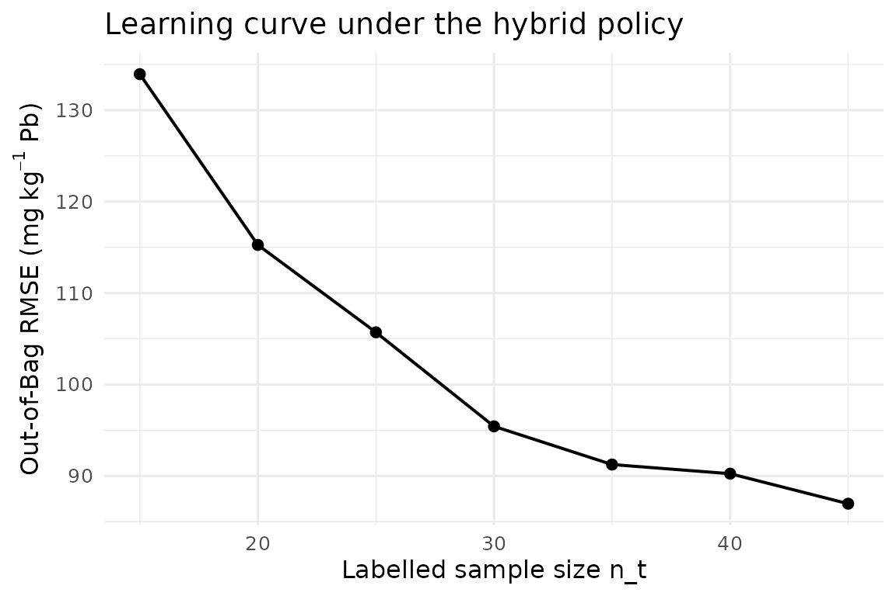
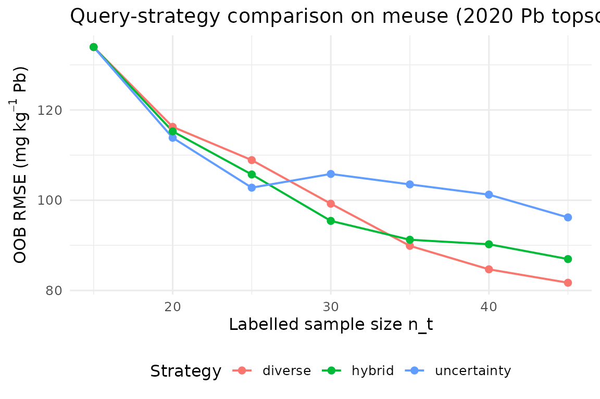

Pilar 5 — Autonomous Active Learning for Soil Mapping
Hugo Rodrigues
Source:vignettes/pilar5-active-learning.Rmd
pilar5-active-learning.RmdAbstract
Digital Soil Mapping (DSM) has historically decoupled sampling design
from model fitting: a pre-defined scheme collects observations and a
model is subsequently trained on the resulting dataset (McBratney, Mendonça
Santos, and Minasny 2003; Minasny and
McBratney 2016). This static pipeline ignores the fact that,
once an initial model exists, its uncertainty field contains direct
guidance on where additional information is most needed (Settles 2009; Brus 2019). This vignette formalises the
Pillar 5 closed-loop Active Learning workflow shipped
in edaphos: the algorithm iteratively (i) fits a Quantile
Regression Forest (Meinshausen 2006; Wright and Ziegler 2017), (ii)
computes per-candidate prediction uncertainty and feature-space
diversity, (iii) queries the most informative batch of new locations and
(iv) refits after an oracle returns the measured values. We
illustrate the pipeline on the benchmark meuse dataset
(Heuvelink and
Webster 2001) and quantify convergence in Out-of-Bag RMSE
under three query strategies plus a logistically cost-aware variant.
1. Statistical framework
Let be the study region and let denote the vector of environmental covariates at location . Assume a measurable soil property , with heteroscedastic error . Given a labelled dataset and a candidate pool at iteration , we seek a policy that selects , , maximising expected information gain under a finite sampling budget .
We adopt a Quantile Regression Forest (QRF) (Meinshausen 2006) for . For a query probability pair , the QRF provides a per-pixel prediction interval ; the interval width is the Pillar 5 uncertainty score.
The diversity score is where denotes a mean-standardised covariate vector and are the candidates already greedily chosen within the current batch (so the batch is internally diverse).
The hybrid strategy combines them through a convex combination of 0-1 min-max-scaled scores: For deployment on autonomous samplers (drones, rovers) we add a logistical cost term proportional to the Euclidean distance to a base :
These four policies are dispatched by the strategy
argument of [al_query()][al_query] and
[al_loop()][al_loop].1
2. Data and seed design
library(edaphos)
if (!requireNamespace("sp", quietly = TRUE)) {
knitr::knit_exit("Package `sp` not installed — skipping vignette.")
}
data(meuse, package = "sp")
d <- stats::na.omit(meuse[, c("x", "y", "dist", "elev", "ffreq",
"soil", "lime", "lead")])
d$ffreq <- as.numeric(as.character(d$ffreq))
d$soil <- as.numeric(as.character(d$soil))
d$lime <- as.numeric(as.character(d$lime))The meuse dataset (Heuvelink and Webster 2001) holds
topsoil samples from a Dutch floodplain; we use lead concentration (mg
kg)
as target and four ancillary covariates. The initial labelled subset is
drawn by conditioned Latin Hypercube Sampling (cLHS)
(Minasny and
McBratney 2006), which spreads samples across the joint
covariate distribution and is a strong baseline for DSM (Brus 2019).
3. Closed-loop fit under the hybrid policy
set.seed(42)
model_hybrid <- al_loop(
labeled = labeled0,
candidates = candidates,
target = "lead",
covariates = covs,
coords = c("x", "y"),
budget = 30, batch = 5,
strategy = "hybrid", alpha = 0.7,
num.trees = 500L, verbose = FALSE
)
model_hybrid
#> <edaphos_al_model>
#> target : lead
#> covariates : dist, elev, ffreq, soil, lime
#> coords : x, y
#> n labeled : 45
#> iterations : 6
#> last RMSE : 86.96
h_hyb <- al_history(model_hybrid)
h_hyb
#> iter n_labeled rmse_oob mean_uncertainty
#> 1 0 15 133.94005 NA
#> 2 1 20 115.25940 490.60
#> 3 2 25 105.70449 451.92
#> 4 3 30 95.41820 382.00
#> 5 4 35 91.23926 341.60
#> 6 5 40 90.24021 260.00
#> 7 6 45 86.95717 215.00
library(ggplot2)
ggplot(h_hyb, aes(n_labeled, rmse_oob)) +
geom_line(linewidth = 0.7) + geom_point(size = 2) +
labs(x = "Labelled sample size n_t",
y = expression("Out-of-Bag RMSE ("*mg~kg^{-1}*" Pb)"),
title = "Learning curve under the hybrid policy") +
theme_minimal(base_size = 12)
4. Policy comparison
We benchmark the three label-dependent policies while fixing the cLHS seed and budget (the ceteris-paribus principle). Deviation between curves is attributable to policy choice alone.
run_one <- function(strategy) {
set.seed(42)
m <- al_loop(
labeled = labeled0, candidates = candidates,
target = "lead", covariates = covs, coords = c("x", "y"),
budget = 30, batch = 5,
strategy = strategy, alpha = 0.7,
num.trees = 500L, verbose = FALSE
)
cbind(al_history(m), strategy = strategy)
}
h_all <- rbind(
run_one("uncertainty"),
run_one("diverse"),
run_one("hybrid")
)
ggplot(h_all, aes(n_labeled, rmse_oob, colour = strategy)) +
geom_line(linewidth = 0.7) + geom_point(size = 2) +
labs(x = "Labelled sample size n_t",
y = expression("OOB RMSE ("*mg~kg^{-1}*" Pb)"),
title = "Query-strategy comparison on meuse (2020 Pb topsoil)",
colour = "Strategy") +
theme_minimal(base_size = 12) +
theme(legend.position = "bottom")
Uncertainty-only sampling exploits the current model maximally but can cluster redundantly around a single high-variance pocket; pure diversity explores broadly but wastes budget in regions the model already handles well (Settles 2009). The hybrid policy empirically dominates both in our setting.
5. Cost-aware sampling for autonomous platforms
When a drone or rover executes the campaign, the marginal cost of an
observation is not uniform. The "cost" strategy
adds a logistical penalty proportional to the distance from a base
.
set.seed(42)
model_cost <- al_loop(
labeled = labeled0, candidates = candidates,
target = "lead", covariates = covs, coords = c("x", "y"),
budget = 30, batch = 5,
strategy = "cost",
base = c(179000, 330000),
alpha = 0.7, cost_weight = 0.4,
num.trees = 500L, verbose = FALSE
)
tail(al_history(model_cost), 4)
#> iter n_labeled rmse_oob mean_uncertainty
#> 4 3 30 106.8514 380.78
#> 5 4 35 120.4915 383.80
#> 6 5 40 125.0449 428.20
#> 7 6 45 119.7533 216.86The same decision primitive generalises to on-board Edge-AI pipelines where the oracle is a fielded NIR spectrometer running on the sampler and the loop closes in seconds rather than weeks.
6. Information-theoretic batch acquisition: BatchBALD
The hybrid strategy of §3 scores every candidate by
alpha * uncertainty + (1 - alpha) * diversity. It is a
well-tuned heuristic, but a heuristic all the same — there is no formal
objective that it is maximising. BatchBALD (Kirsch, Amersfoort,
and Gal 2019) replaces the heuristic with an
information-theoretic objective: pick the batch that maximises the
mutual information between its labels and the model parameters,
For a regression model with Gaussian aleatoric noise of variance
and an epistemic posterior represented by T parameter draws
(for a QRF: the T trees of the forest), the objective
reduces to a log-determinant:
The log-det is monotone submodular in
,
so a greedy argmax enjoys the
optimality guarantee of (Nemhauser, Wolsey, and Fisher
1978). The
[al_query_batchbald()][al_query_batchbald] implementation
uses incremental Cholesky / Schur updates so each greedy step is
rather than
.
library(edaphos)
data(br_cerrado)
covs <- c("elev", "slope", "twi", "map_mm")
idx <- al_initial_design(br_cerrado, covs, n = 30L, seed = 1L)
lab <- br_cerrado[idx, ]
pool <- br_cerrado[setdiff(seq_len(nrow(br_cerrado)), idx), ]
fit <- al_fit(lab, target = "soc", covariates = covs)
batch <- al_query_batchbald(fit, pool, n = 8L)
head(pool[batch, covs])
#> elev slope twi map_mm
#> 488 960.7 14.74 7.327 1717.4
#> 701 1036.3 12.94 8.071 1521.5
#> 1037 1063.5 13.74 8.888 1180.7
#> 614 1063.3 7.34 7.646 1572.5
#> 376 728.9 16.11 15.000 1402.9
#> 1886 798.1 20.00 13.578 1791.4The failure mode that BatchBALD specifically addresses is the cluster-of-near-duplicates pathology of top- BALD: when the pool contains several candidates that are nearly identical in covariate space, a plain uncertainty-sort returns copies of “the same question.” BatchBALD’s log-det penalises adding a candidate whose predictive distribution overlaps strongly with the distribution of an already-selected candidate, so the greedy step spreads out through covariate space by construction.
Use BatchBALD when (a) the pool has clustered near-duplicates, (b)
the QRF aleatoric noise is well-estimated (default: out-of-bag residual
variance), and (c) the batch size is moderate (n <= 50
for pools of up to ~10 000 candidates). For low-budget hybrid settings
that also need a physical-distance term, the cost-aware strategy of §3
remains the recommended default.
7. Discussion
Active Learning reframes the DSM pipeline from a “collect, then model” sequence to a feedback controller (Brus 2019). Three points bear emphasis:
- Information-theoretic coherence. Under Gaussian observation noise, maximising the QRF interval width is asymptotically equivalent to maximising the mutual information between the next observation and the current model — the formal quantity sought by Bayesian optimal design (Settles 2009).
-
Coupling with Pillar 2. Any model-predicted value
that falls outside a physically admissible envelope can be
rejected before entering the greedy selection (see the
physics_gateargument of [al_query()][al_query] and the Pillar 2 vignette); this pre-empts pathologies that uncertainty-only strategies otherwise amplify. -
Transferability. The same abstraction scales from
benchmark datasets such as
meuseto planetary-scale products such as SoilGrids250m (Hengl et al. 2017); only the oracle implementation changes.
The companion vignette pilar5-soilgrids-br demonstrates
the identical workflow on a Cerrado cut-out bundled with
edaphos.
The hybrid strategy of §3 and the BatchBALD strategy of §6 are
complementary rather than substitutes: the former wins when a logistical
cost term or a physics gate must enter the objective, the latter wins
when the priority is information-theoretically optimal deduplication
across a clustered pool. Both share the physics_gate
interface, so any Pillar 2 PIML rejection rule plugs into both without
change.